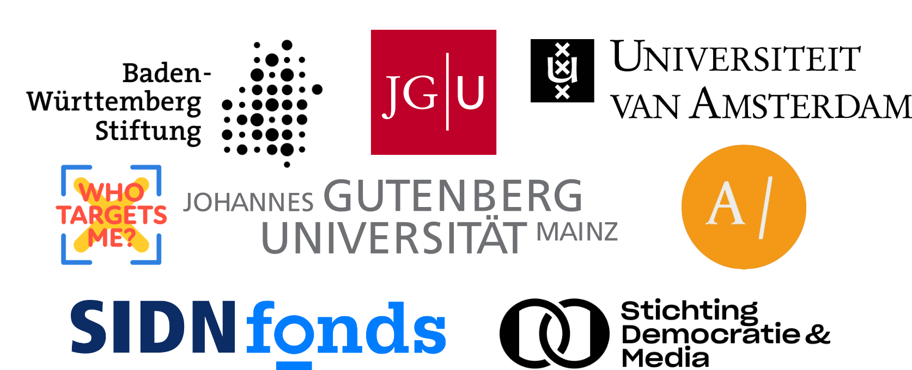

Welcome to the AI Explorer. This view brings together posts that our pipeline flagged as AI-generated and lets you investigate patterns across actors, platforms, and message content. Use column filters to slice the data, sort on any header, and search the post text to surface specific phrases.
Sort & Search
Click any column header to sort. Use the search box above the table to find words in the post text (case-insensitive).
Filter by Actor
Narrow the list to a party or actor type. Select “All” (default) to clear the filter and return to the full set of images.
Filter by Platform
Limit results to all the platforms we are tracking: Facebook, Instagram, X, or TikTok.
Tags (topics + themes)
Explore posts with our annotated topics and themes. If a +N chip appears on a post with many tags, you can hover over the chip to see the remaining tags.
AI Label Indicator
The column marks AI disclosure (either in text, image, or by the platform): labeled (✓), no label (×),
Open the Original
Please note that previews represent only one frame/image. Use the column to open the post in a new tab on its source platform and verify content in context.
Due to continuous improvements in generative AI technology, our detection methods may encounter edge cases where some content may evade detection or is not flagged correctly. If you have information about the AI origin of a specific post or notice AI content not reflected here, please email info@campaigntracker.de with the post URL, platform/account, date/time, and any supporting evidence.
Please review our methodology for details on data collection and AI-detection procedures.
Explore
